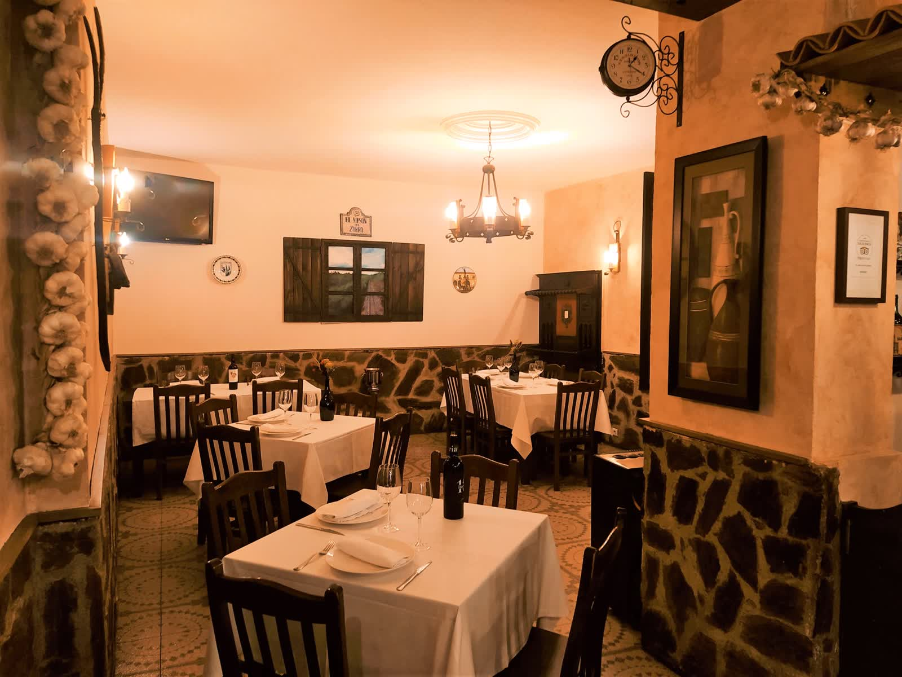

 Tradición viva
Tradición viva
Un restaurante en constante evolución
El Mesón del Zorro participa activamente en las iniciativas gastronómicas de Zamora: jornadas temáticas, menús especiales de temporada y eventos vinculados a la cultura culinaria de la región.